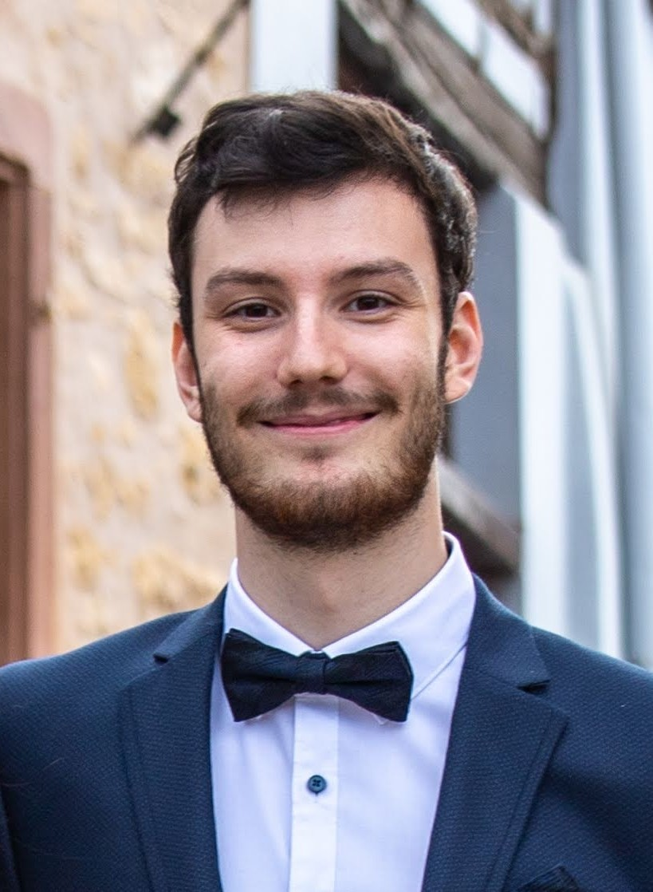
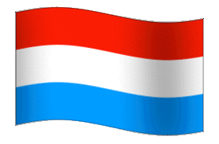

Computational Materials Science | Polymer Modelling | Molecular Simulation
I work on modelling molecular systems, with a focus on materials, polymers, and large-scale interactions. During my PhD at the University of Luxembourg, I studied how structure and interactions at the molecular level translate into observable properties such as mechanical behaviour, diffusion, and system stability.
My work is practical as much as theoretical. I build simulations, analyse results, and try to understand what is actually happening in the system. I have worked with tools such as LAMMPS, GROMACS, Fortran, Python, and custom code, and developed machine learning methods to estimate interaction energies and forces when standard calculations become costly.
Over time, what became most important to me was not only running simulations, but making sense of them. Understanding why a system behaves the way it does, and how small-scale interactions can affect larger-scale behaviour. I have worked on polymers, carbon-based systems, proteins, nanotubes, and other complex molecular structures.
My academic path took me through Strasbourg, Milan, Paris, Mulhouse, and Luxembourg. I trained in chemistry, chemoinformatics, medicinal chemistry, molecular physics, macromolecules, and computational chemistry. Earlier laboratory work also gave me hands-on experience with synthesis, catalytic systems, and molecular interactions.
During my PhD, I worked in a large research group where I was exposed to many different ways of thinking and working. I learned methodically from the people around me. That is where I built my own way of working: clear, organised, curious, and efficient.
I am now looking to move closer to applied R&D, where scientific understanding connects directly to real materials, processes, and products.
You can contact me at nils211@hotmail.fr.

